Choose your music adventure
点一张图片，开始探索吧。
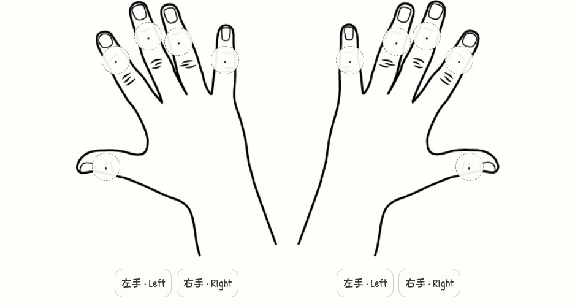
辨认左右手 · 五指指号
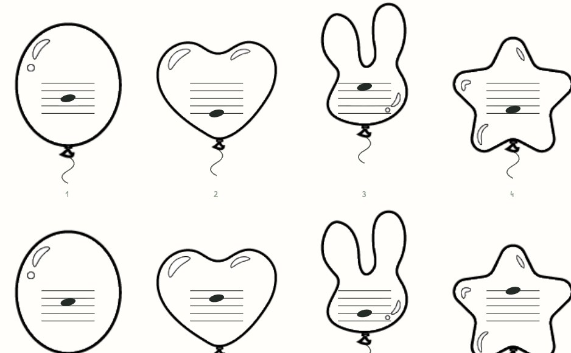
红蓝涂色 · 认识线音与间音
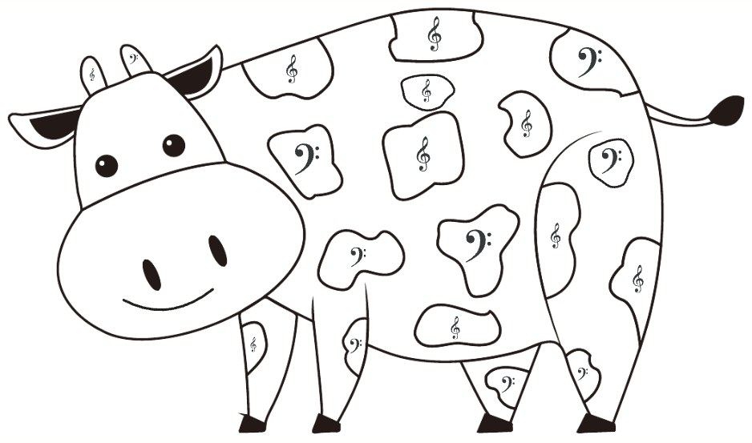
黑棕涂色 · 认识高低音谱号
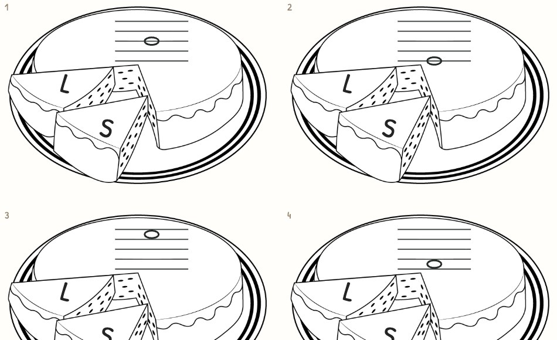
圈选 S / L · 认识线音与间音
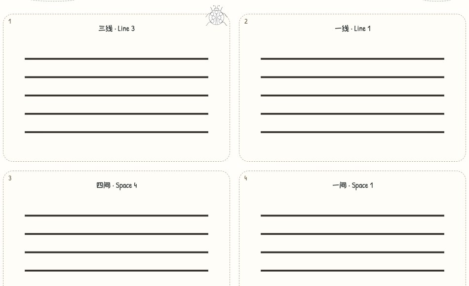
按线间位置画音符
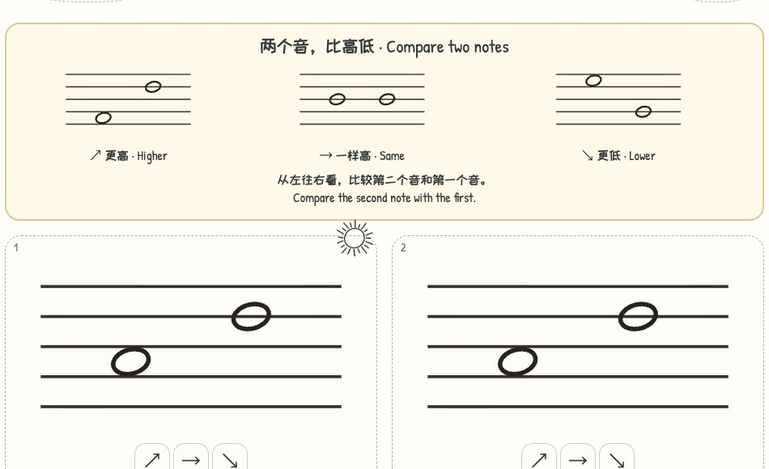
两个音符 · 比较高低
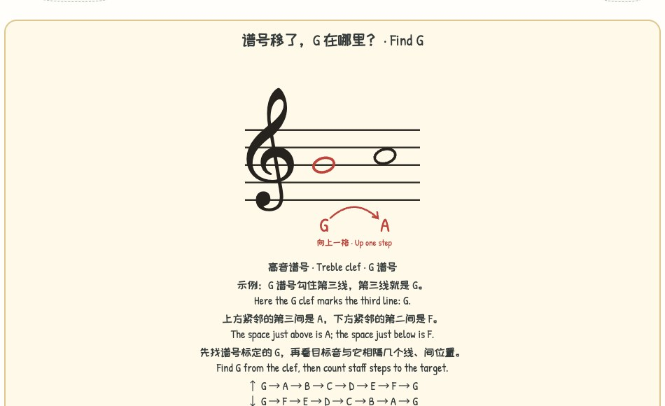
根据已知音 · 推算音名
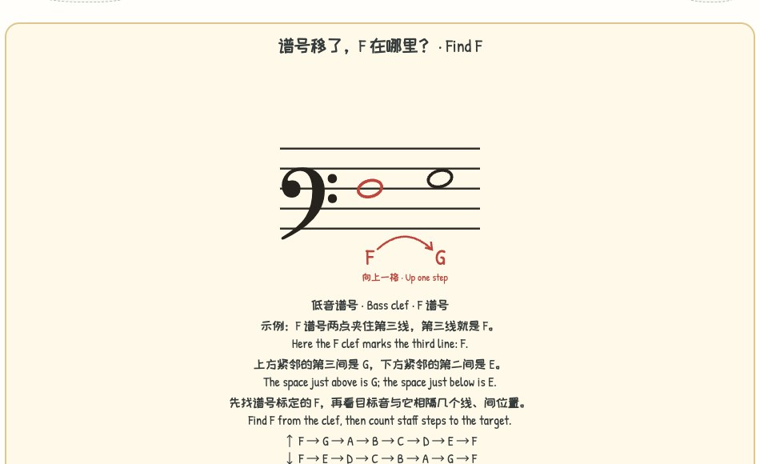
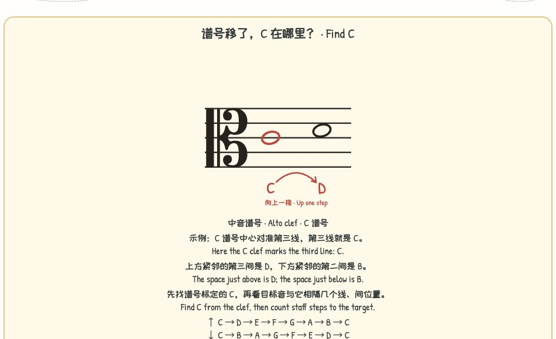
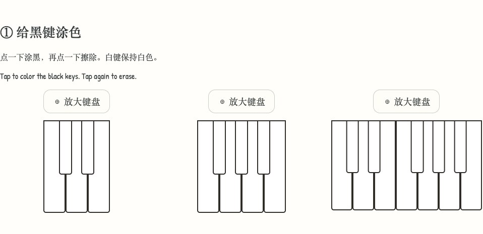
黑键涂色 · 圈选完整音组
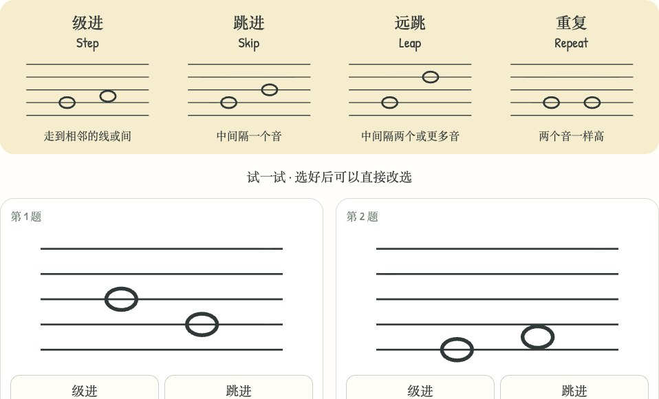
辨认级进 · 跳进 · 远跳 · 重复
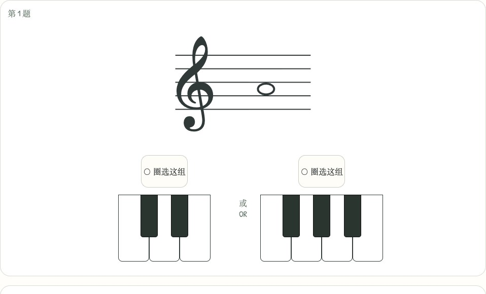
看谱找键组 · 找琴键
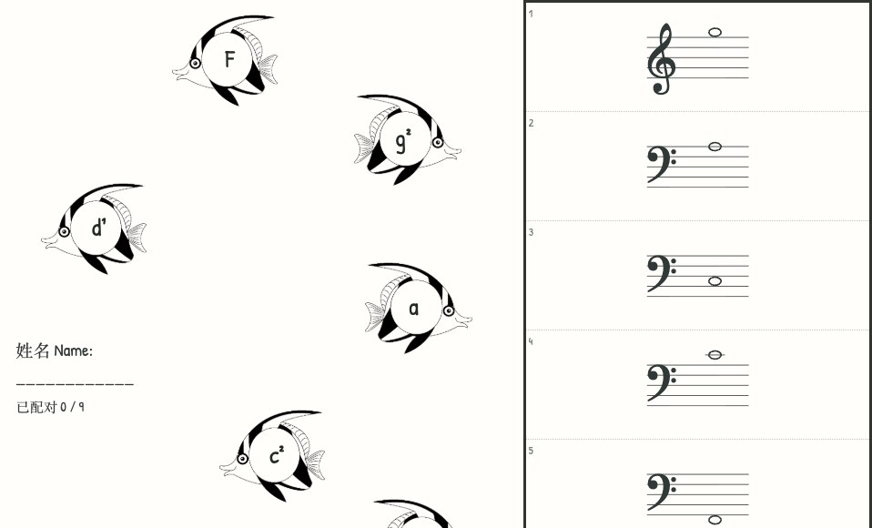
音名与八度 · 五线谱配对
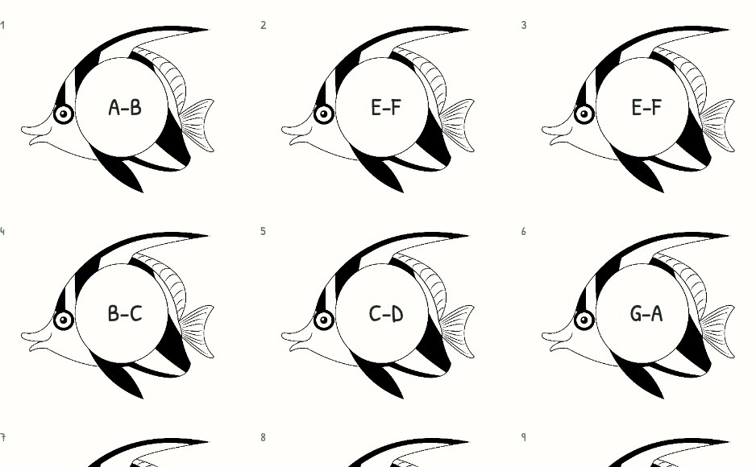
全音涂蓝 · 半音涂红
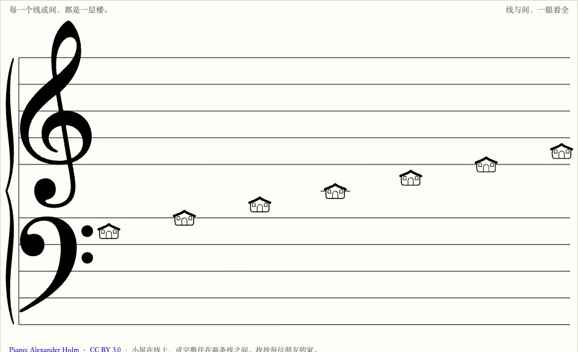
送音符回家 · 找楼上楼下的邻居
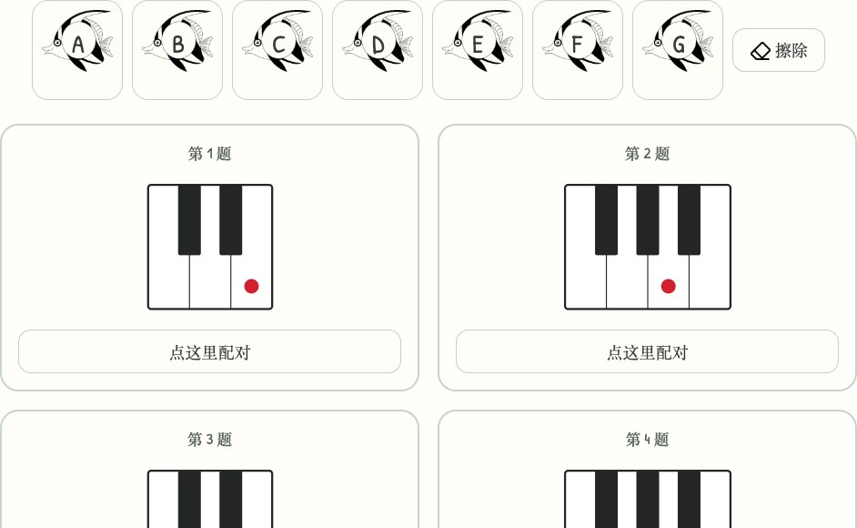
音名小鱼 · 配对标记琴键
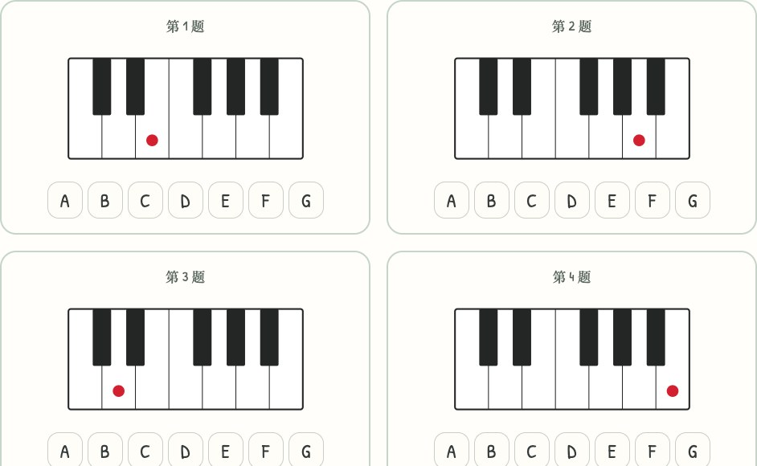
看标记琴键 · 选择音名
学生档案只保存在这台设备的浏览器中。更多音乐小游戏 →